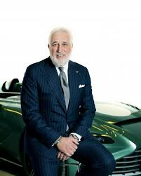
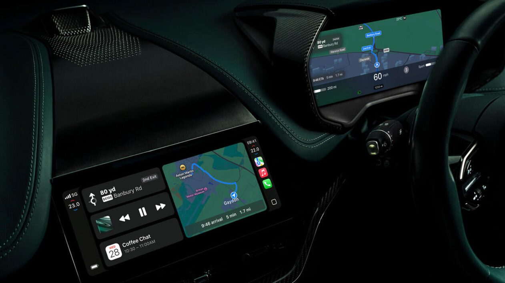
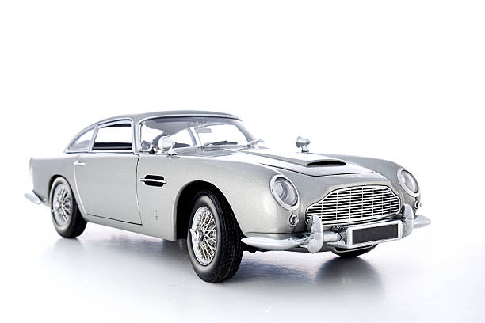
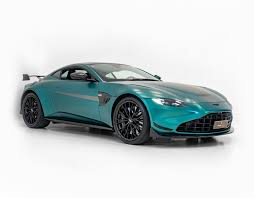
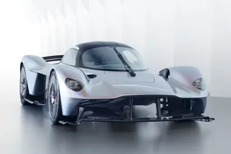

A Aston Martin foi fundada em 1913 por Lionel Martin e Robert Bamford, em Londres. Desde cedo, destacou-se por produzir carros esportivos sofisticados, unindo performance e elegância britânica.
História

Design e Performance
Os carros da Aston Martin são reconhecidos mundialmente pelo design artesanal, aerodinâmico e luxuoso, aliados a motores potentes que oferecem alto desempenho sem perder a sofisticação.
Tecnologia
A marca investe em tecnologias modernas como motores V12 de alto rendimento, uso de fibra de carbono para reduzir peso, além de sistemas avançados de infotainment e assistência ao condutor.

Modelos Mais Icônicos
Aston Martin DB5
Lançado em 1963, ficou eternizado como o carro do James Bond. Ícone do design clássico e um dos modelos mais famosos da marca.

Aston Martin Vantage
Um dos modelos esportivos mais recentes, o Vantage combina agilidade, motor potente e visual agressivo, representando o DNA da marca.

Aston Martin Valkyrie
Um hiper carro futurista desenvolvido em parceria com a Red Bull Racing, que aplica tecnologias da Fórmula 1 em um carro de rua.
